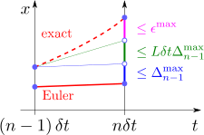

ニュートンの運動方程式：
を解きたい。前章では、この方程式を導出するところまで行ったので、後は解き方が分かれば、物体の運動を実際に計算できるようになる。
この章では、式()の一般的な解放である数値解法について述べた後、いくつかの例について実際に計算を行う：
運動方程式の数値解法力の例（参考）オイラー法は微分方程式の解に収束する
3.1運動方程式の数値解法
ほとんどの運動方程式は、解析的には解けないので、数値的に解くことになる。この節では、もっとも単純な解法であるオイラー法()について述べる。（ステップ幅
を小さくしていった極限で厳密解に一致することは3節で証明する。）
オイラー法による運動方程式の解法：式()
運動方程式()を数値的に解く方法は、第1章のキャッチボールの場合と同じである。即ち、1次近似によって得られる以下の漸化式：
を用いて、
ずつ時刻
を進めていけばよい。ただし、
での位置
と速度
は与えられているとする。微分方程式を解く一般的な方法であるオイラー法（以下の【3.1-注1】）を適用したものである。
式()の導出は、1次近似の定義式：
において、運動方程式()を用いて
を消去するだけである。
【3.1-注1】1階正規形の微分方程式()の解法：オイラー法
未知の関数
に対する以下の形の式を、1階正規形の微分方程式と呼ぶ[1]：（
は既知の関数）
初期値
が与えられた時、式()を数値的に解いて任意の時刻
での
を求めるには、1次近似の式：
を漸化式として使って、十分に小さな時間間隔
ずつ時刻を進めていけばよい（右図）。この計算手法を、オイラー法という[2]。
補足
[1] 「1階」は
についての1階微分方程式であることを意味し、「正規形」は
の形になっていることを意味する。多くの微分方程式がこの形に変形できる。例えば、運動方程式
は2階の微分方程式であるが、以下のように1階正規形に変形できる：
赤字部分を
とおき、右辺を
とおけば、確かに1階正規形()になっている。これにオイラー法()を適用したものが式()である。
[2] オイラー法は単純で分かりやすい解法ではあるが、
を相当小さくしなければ誤差が十分減らない。しかし一方、
を小さくしすぎると、計算量が増大することに加え、丸め誤差が問題になる。丸め誤差とは、コンピュータ上では実数が有限の精度しか持たないことによる誤差であり、例えば精度が15桁の場合、
は
に丸められてしまい変化しなくなる（
が小さすぎる場合の式()の右辺に対応する）。これらのため実用上は、オイラー法()のように
の1次関数で近似するのではなく、より高次の多項式で近似する方法がとられる。特に、4次のルンゲ・クッタ法と呼ばれるものがよく使われ、本サイトのシミュレーションでも使用しているが、説明は割愛する。
力 は、時間・位置・速度の関数
オイラー法()で運動方程式を解くには、右辺に現れる力
が分かっている必要がある。
は、時間
の既知の関数でなくとも、未知関数である位置
や速度
の関数であってもよい：
（オイラー法()の右辺では
は既知だからである。）
もう少し詳しく言うと、
の依存性では、例えば
のように、どのような関数になるか予め分かっている必要がある。
の依存性は、例えばバネのように、その時刻
での位置
が分かった時点で、働く力が決まるというものである。
の依存性も同様で、例としては空気抵抗が挙げられる（速度が大きいほど抵抗が大きくなる）。もちろん
は、
全ての依存性を同時に含むような関数であってもよい。
3.2力の例
この節では、いくつかの例に対して、シミュレーションを行う。単純なものについては解析解も示す。
一定の力：式()
もっとも単純な例として、
が定数の場合、即ち、時間や位置などによらず常に一定の力で押されて（引かれて）いる場合を考える。この
を表したのが右図である。右図はベクトル場と呼ばれるもので、「物体をそこに置いた時にどのような力が働くか」が矢印で示されている。これを見れば、物体がどこにあっても上向きの一定の力が働くことが一目瞭然である。
運動方程式は、
である。
数値計算を行うと右図のようになる。式()は、前章のキャッチボールの運動方程式とほとんど同じ形なので、解析解が容易に見つかる（以下の【3.2-注1】）。
【3.2-注1】定数の力の場合の解析解：式()
運動方程式()の解析解は、
を初期値として、以下のようになる：
補足
これが、初期条件
および
を満たし、かつ、運動方程式()も満たしていることは、実際に代入してみればすぐ分かる。
運動方程式()は、キャッチボールの運動方程式
に対して、
という置き換えを行ったものなので、解()も、第1章の1.3節で述べたキャッチボールの解析解に同じ置き換えを行ったものになる。
変位に比例する力：式()
定数の次に単純なのは、力
が
に比例する場合である：
（簡単のため
軸上の1次元運動とする）。この力をベクトル場で表すと、右図のようになる（上側は
、下側は
の場合）。
運動方程式は
である。
数値計算を行うと右図のようになる。
の場合、原点に引きつけようとする力を受けて、振動する（例えばバネや振れ幅の小さい振り子）。逆に、
の場合、原点から勢いよく離れていく（例えば逆さまにした振り子の頂点付近）。解析解も知られており、以下の【3.2-注2】のようになる。
式()のような運動方程式は、現実にもよく現れる。それは、釣合いの点の付近である。実際、物体の位置
が釣合いの点（＝原点とする）の付近にある場合、力
を1次近似すれば、確かに
の形になる：
は
での微分である：
（
と書くと時間微分になる）。空気抵抗など、速度
に依存する力は無視できるとする。特に、バネの場合、この近似が比較的広い範囲で成り立つ（以下の【3.2-注3】）。
【3.2-注2】1次の力の場合の解析解：式()
運動方程式()の解析解は、
の符号によって異なり、以下のようになる[1]：
はそれぞれ初期位置・初期速度であり、
は以下で定義される：
補足
これらが、初期条件
および
を満たし、かつ、運動方程式()も満たしていることは、実際に代入してみればすぐ分かる。
[1]
は、双曲線関数である：
【3.2-注3】フックの法則
実験によると、「バネの長さの変化
」と「バネに加えた力
」は、近似的に比例する。即ち、バネに固有の定数
（＝バネ定数という）を用いて、以下が成り立つ：
この関係式を、フックの法則という（
でもよい）。
補足
バネ定数
が分かっていれば、
を読み取ることにより、つり下げた物体に働く重力（＝重さ）が逆算できる。これは、バネ量りの原理である。
惑星に働く力：式()
地球は、太陽の周りを回っている。即ち、太陽から力を受けている。この力
は、原点に太陽があるとして、以下の式で表せることが知られている：
（
は地球の位置、
は地球の質量。）
は、太陽の方向を向き、大きさは太陽からの距離
の
乗で減衰する。詳しくは重力理論編の第1章を参照。
数値計算を行うと右図のようになる。
磁場中の荷電粒子に働く力：式()
電流や磁石の近くを運動する荷電粒子は、速度
に依存した力（ローレンツ力）を受けることが知られている。この力
は以下のようになる：（右辺は行列とベクトルの積）
は
に垂直である（
との内積をとればゼロになる）。
は磁場と呼ばれるベクトルで、位置や時間に依存してもよい。詳しくは電磁力学編の第3章を参照。
一様磁場の場合に数値計算を行うと右図のようになる。
3.3（参考）オイラー法は微分方程式の解に収束する
この節では、オイラー法のステップ幅を小さくしていくと、解に収束することを示す。（ここでは解の存在を仮定するが、解が存在すること自体もほぼ同じ条件の下でで示せる。）
定理：オイラー法は微分方程式の解に収束する
微分方程式
が、任意の初期値
の下で常に解を持つとする。この時、オイラー法でステップ幅
の極限をとったものは、その解に一致する。
ただし、
の変化率は有限であるとする。即ち、ある定数
（＝傾きの最大値）が存在して、（同一時刻
の）任意の異なる2点
に対して
が成り立つ。これをリプシッツ条件という[1]。
補足
[1] リプシッツ条件()のノルムは、
のようにとればよい。異なる単位が混ざった2乗和が現れるとそのままでは定義できないが、その場合は、単位を無視して数値部分だけを使えばよい（単位の取り方によって値が変わってしまうが「傾きが有限」という性質には影響しないので問題ない）。
証明
微分方程式()の厳密解を
、オイラー法で得られた折れ線関数を
とおく（
はオイラー法の刻み幅）。示したいのは、
の時に両者が一致することである：
そのためには、厳密解
とオイラー法の誤差
の最大値を見積もり（＝以下の式()）、その誤差が
の時にゼロになることを示せばよい。

まず、オイラー法の1ステップの間に生じ得る、最大誤差
を
とおく（右図）。
はステップ幅
だけの単調増加関数であり、オイラー法の起点
には依存しないとする（あらゆる起点を考えた上での最大値を考えている）。
は、1次近似で生じる誤差なので、
の2次程度の微小量（
）：
である。

それでは証明に入ろう。時刻
から
の間に生じ得る最大誤差を
とおく。オイラー法の1ステップでの誤差は右図のように評価できるので、
と
を関係づける以下の漸化式を得る：
青色部分は1ステップ前の最大誤差を引き継いだもの、緑色部分は傾き
の誤差の影響をリプシッツ条件()（分母を
に置き換えたもの）を使って評価したもの、マゼンタ部分は式()である。（数式を使って式()を導くには、三角不等式を使って
の左辺を、式()の各項が出るように分解していけばよい。）漸化式()を、初期値
の下で解くと
後のために、公式を適用する
となる（特性方程式を使って解ける）。
式()において、
を保ったまま
の極限を取れば
となる（式()により青字部分がゼロになる）。よって、厳密解が存在するならば、
の極限で、オイラー法はその解に収束する。